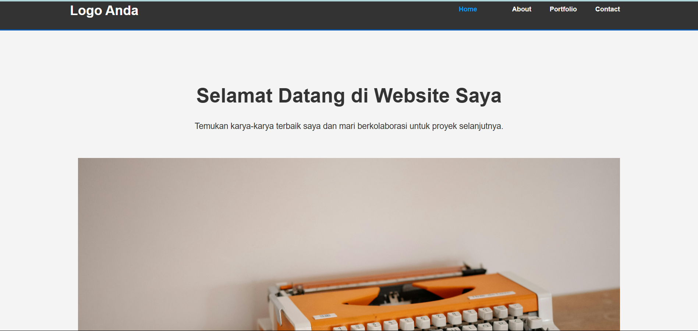

Studi Kasus: Website Portofolio Pribadi
Klien
Proyek Pribadi
Peran
Full-Stack Developer (Konsep, Desain, Kode)
Teknologi
HTML5, CSS3
Tantangan
Tantangan utamanya adalah membangun sebuah website portofolio yang profesional, bersih, dan cepat dari nol. Tujuannya adalah untuk menciptakan sebuah platform digital yang tidak hanya menampilkan karya, tetapi juga menunjukkan pemahaman tentang praktik pengembangan web modern, struktur kode yang rapi, dan desain yang responsif.
Proses & Solusi
Proses dimulai dengan perencanaan matang, menentukan halaman apa saja yang dibutuhkan (Home, About, Portfolio). Saya kemudian membuat struktur file yang terorganisir dan menggunakan tag HTML semantik (seperti <header>, <main>, <footer>, dan <section>) untuk memastikan website ini ramah SEO dan aksesibel. Untuk styling, saya menggunakan CSS3 dengan pendekatan modular, termasuk memanfaatkan Flexbox untuk layout yang kompleks seperti pada halaman portofolio, sehingga menghasilkan desain yang rapi dan mudah dikelola.
Hasil
Hasilnya adalah website portofolio multi-halaman yang fungsional, estetis, dan memiliki kode yang bersih. Proyek ini berhasil menjadi fondasi yang kuat untuk menampilkan identitas profesional saya secara online dan menjadi bukti nyata kemampuan teknis dalam pengembangan web front-end dasar.